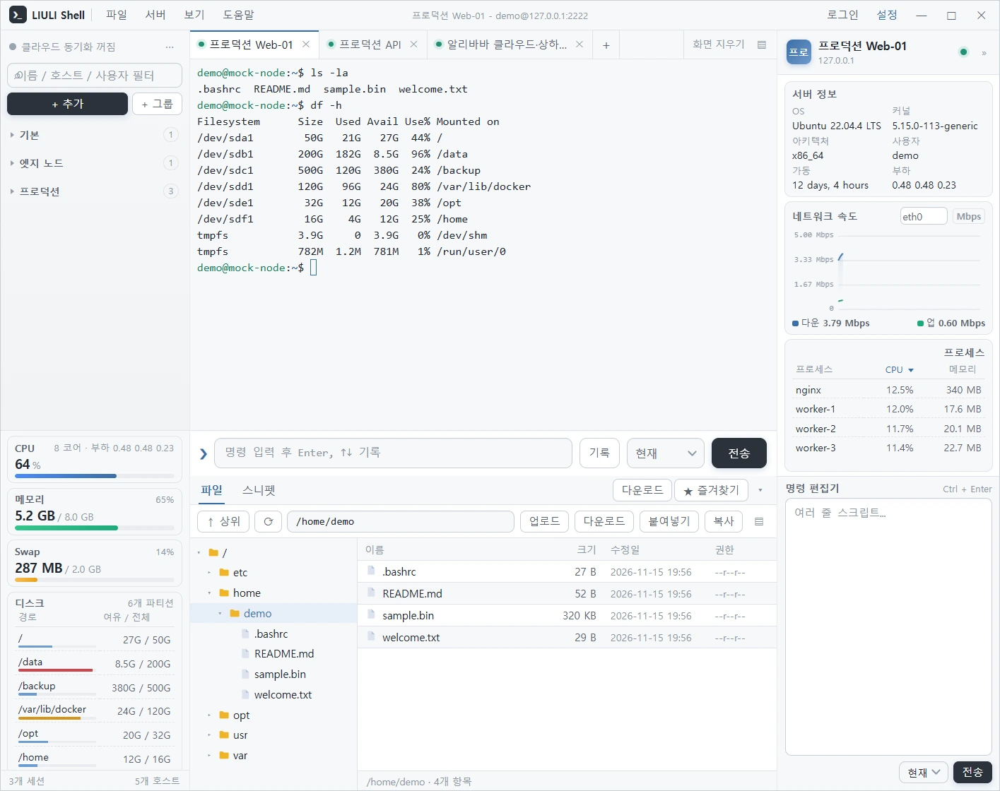
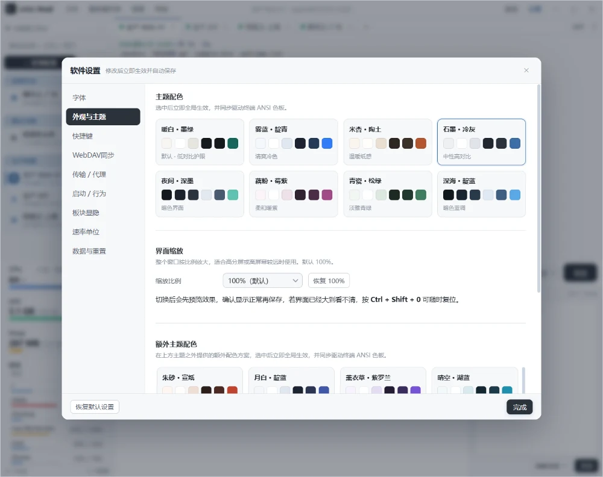

▤
서버 관리
그룹으로 서버를 정리하고 다중 선택, 드래그 이동, 설정 복사를 지원합니다. 삭제한 연결은 30일 휴지통에 보관되며 언제든 복원할 수 있습니다.
LIULI Shell은 크로스 플랫폼 SSH 클라이언트입니다.
연결 관리, 대화형 터미널, SFTP 파일 전송, 실행 상태 모니터링과 설정 동기화를 하나의 데스크톱 앱에 통합했습니다. 여러 서버를 함께 관리하는 개발자와 운영자에게 적합합니다.

Windows 10 / 11은 설치판과 포터블판을 제공하며, Linux와 macOS는 소스에서 빌드합니다. 설치판과 포터블판의 기능은 동일합니다.
대상 시스템에서 의존성을 설치하고 패키징합니다. deb, AppImage, tar.gz 및 macOS의 dmg와 zip을 지원합니다.
%APPDATA%\LIULI Shell에 저장됩니다. 업그레이드나 재설치 시에도 삭제되지 않습니다. 컴퓨터를 바꿀 때는 클라우드 동기화로 백업하거나 설정에서 설정 파일을 내보내 이전할 수 있습니다.
Linux와 macOS는 로컬에서 빌드해야 합니다. 아래 명령을 한 줄씩 실행하고 전체를 한 번에 붙여넣지 마세요. 스크립트가 배포판을 인식하고 의존성을 설치한 뒤 패키징 유형을 묻습니다.
먼저 소스(Gitee 또는 GitHub 중 하나)를 선택한 다음 디렉터리로 이동해 빌드 스크립트를 실행합니다.
Gitee의 기본 클론 디렉터리는 liuli-shell이며, GitHub의 기본 디렉터리는 Liulishell입니다. 아래에서는 모두 liuli-shell(으)로 클론하므로 이후 명령도 동일합니다.
Git이 필요합니다.0단계에서 Git을 설치하고, 1단계에서는 소스 하나만 남기며, 2단계에서 빌드 스크립트를 실행합니다. 클론이 끝난 뒤에 빌드 명령을 실행하세요.
# 0) Git 필요; 설치되어 있으면 자동으로 건너뜀 (다른 배포판은 dnf / pacman 사용) command -v git >/dev/null || sudo apt-get update && sudo apt-get install -y git # 1) 이전 디렉터리를 삭제한 뒤 소스 클론 (Gitee / GitHub 중 하나) # Gitee (중국 내 권장, 기본 디렉터리는 liuli-shell) rm -rf liuli-shell Liulishell && git clone https://gitee.com/liuliwanjiaweb/liuli-shell.git liuli-shell # GitHub (해외 권장; 기본 디렉터리는 Liulishell이며 여기서는 liuli-shell로 지정) rm -rf liuli-shell Liulishell && git clone https://github.com/LIULIWANJIA/Liulishell.git liuli-shell # 2) 프로젝트로 이동해 빌드: 배포판 인식 → 시스템 의존성 설치 → deb / AppImage 선택 → 패키징 → 설치 여부 확인 cd liuli-shell && bash scripts/build-linux.sh
결과물은 dist/에 생성됩니다. 스크립트에서 선택을 안내합니다: 1 = deb / 2 = AppImage / 3 = 둘 다; .tar.gz 만 빌드하려면 다음 명령을 사용하세요: bash scripts/build-linux.sh tar. 스크립트가 Ubuntu 24.04+의 *t64 패키지 이름 대체를 자동으로 처리합니다. CI 등 비대화형 환경에서는 자동 설치가 되지 않으므로 결과물을 직접 설치해야 합니다. 환경이 비정상이면 먼저 bash scripts/build-linux.sh check 명령으로 진단하세요. Electron 다운로드가 느리면 스크립트가 자동으로 미러를 전환합니다.
# 3) 의존성이 설치되지 않았거나 빌드 오류가 발생하면 순서대로 시도
bash scripts/build-linux.sh repair
bash scripts/build-linux.sh deps
bash scripts/build-linux.sh
기본 환경이 이미 설치되어 있으면 자동으로 건너뜁니다.Homebrew 설치 과정에서 현재 사용자 비밀번호를 입력해야 합니다. 클론 후 의존성을 설치하고 패키징하며, Intel과 Apple Silicon을 필요에 따라 선택할 수 있습니다.
# 기본 환경 (이미 설치했으면 자동으로 건너뜀; xcode-select는 팝업이 뜨므로 설치가 끝난 뒤 계속) xcode-select --install 2>/dev/null || true command -v brew >/dev/null || /bin/bash -c "$(curl -fsSL https://raw.githubusercontent.com/Homebrew/install/HEAD/install.sh)" # 새로 설치한 Homebrew를 현재 터미널 PATH에 추가 (Intel은 /usr/local/bin/brew) if [ -x /opt/homebrew/bin/brew ]; then eval "$(/opt/homebrew/bin/brew shellenv)"; elif [ -x /usr/local/bin/brew ]; then eval "$(/usr/local/bin/brew shellenv)"; fi # Node ≥ 18 필요; 없거나 버전이 오래된 경우 20을 설치한 뒤 확인 node -v 2>/dev/null | grep -qE '^v(1[89]|[2-9][0-9])' || brew install node@20 brew link --overwrite --force node@20 >/dev/null 2>&1 || true node -v && npm -v # 이전 디렉터리를 삭제한 뒤 소스 클론 (Gitee / GitHub 중 하나) rm -rf liuli-shell Liulishell # Gitee (중국 내 권장, 기본 디렉터리는 liuli-shell) git clone https://gitee.com/liuliwanjiaweb/liuli-shell.git liuli-shell # GitHub (해외 권장; 기본 디렉터리는 Liulishell이며 여기서는 liuli-shell로 지정) git clone https://github.com/LIULIWANJIA/Liulishell.git liuli-shell
cd liuli-shell npm ci || npm install # 실패 시 npm install로 자동 대체 npm run vendor # 중국 내 네트워크에서 Electron 다운로드가 느리면 아래 두 줄의 주석을 해제하세요 (선택) # export ELECTRON_MIRROR=https://registry.npmmirror.com/-/binary/electron/ # export ELECTRON_BUILDER_BINARIES_MIRROR=https://registry.npmmirror.com/-/binary/electron-builder-binaries/ npm run dist:mac # x64 + arm64 함께 빌드 npx electron-builder --mac dmg zip --arm64 # Apple Silicon만 빌드
결과물은 dist/(.dmg / .zip).npm run vendor 명령은 xterm 리소스를 다음 위치로 복사합니다: src/renderer/vendor. 패키징 전에 반드시 실행해야 합니다. Intel과 Apple Silicon 결과물은 혼용할 수 없습니다. 서명되지 않은 앱이 Gatekeeper에 의해 차단되면 마우스 오른쪽 버튼으로 「열기」를 선택해 허용하세요.
중국 내 네트워크에서는 Gitee 사용을 권장하며, Electron 다운로드가 느릴 때는 미러 변수를 설정할 수 있습니다.
FinalShell에서 내보낸 JSON 파일 또는 전체 설정 폴더를 가져올 수 있습니다. 가져오기 시 연결 정보를 읽고 그룹 계층을 재구성하며, 저장 전에 통계를 보여줍니다.
파일을 끌어다 놓으면 되며, JSON 여러 개 또는 전체 설정 폴더를 한 번에 선택할 수 있습니다.
폴더는 계층에 따라 그룹을 자동으로 생성하며(최대 3단계), 3단계보다 깊은 폴더의 JSON은 대상 그룹과 관계없이 해당 1단계 그룹에 포함됩니다.
사용 문의, 기능 제안과 버전 소식은 그룹에서 공유됩니다. 주로 사용하는 플랫폼에 참여하세요.
서버 연결부터 파일 전송, 상태 확인, 설정 마이그레이션까지 주요 작업을 클라이언트 안에서 처리합니다. 각 모듈이 무엇을 하는지 아래에서 설명합니다.
그룹으로 서버를 정리하고 다중 선택, 드래그 이동, 설정 복사를 지원합니다. 삭제한 연결은 30일 휴지통에 보관되며 언제든 복원할 수 있습니다.
각 탭은 독립적인 SSH 세션이며 명령 기록, 빠른 입력, 연결 끊김 후 재연결, 탭 드래그 정렬을 지원합니다. 프록시 연결에는 상태 표시가 붙습니다.
SFTP 디렉터리 트리와 파일 목록이 연동되어 터미널에서 디렉터리를 바꾸면 자동으로 따라갑니다. 업로드와 다운로드, 권한 변경, 내장 텍스트 편집기를 지원합니다.
CPU, 메모리, Swap, 디스크, 네트워크 카드와 프로세스 데이터를 지속적으로 수집하고, 차트 범위가 자동으로 조정되어 비정상 부하를 바로 파악할 수 있습니다.
다운로드 작업을 별도 창에서 관리하며 일시 정지, 취소, 비우기를 지원합니다. 진행률, 속도와 작업 상태를 실시간으로 표시합니다.
공식 클라우드 서비스와 사용자 지정 WebDAV를 지원합니다. 서버 설정, 그룹과 즐겨찾기를 암호화해 동기화하고 여러 기기에서 양방향으로 병합하며, 수동 동기화와 백업도 가능합니다.
FinalShell의 JSON 백업 또는 전체 설정 디렉터리를 읽어 원래 계층대로 그룹을 재구성합니다. 가져오기 전에 미리 보여주고 중복 항목은 자동으로 건너뜁니다.
라이트 및 다크 테마 8종을 내장했으며 글꼴, 글자 크기, UI 배율, 마우스 동작과 단축키를 조정하고 자동으로 저장합니다.
개별 연결 또는 전역으로 HTTP / SOCKS5 프록시를 설정하며, 기본 프록시와 직접 연결 대체를 지원해 내부망과 제한된 네트워크에 적합합니다.
자주 쓰는 명령을 보드별로 정리해 터미널에서 긴 명령을 반복 입력하지 않도록 합니다. 수정이 필요하면 명령 편집기에서 처리합니다.
자주 쓰는 명령, Docker, 네트워크 등 보드를 따로 관리하고 버튼에는 이름만 표시해 화면을 깔끔하게 유지합니다. 보드와 명령 모두 드래그로 정렬할 수 있습니다.
연결 후 실행 상태를 자동으로 수집하며, 비정상 부하를 클라이언트에서 먼저 파악한 뒤 터미널에서 처리할지 결정할 수 있습니다.
왼쪽에는 리소스 개요, 오른쪽에는 네트워크 속도와 프로세스 점유를 표시합니다. 새로 고침 간격과 속도 단위는 설정에서 조정할 수 있습니다.
연결 자격 증명, 설정 백업과 삭제 복구를 모두 클라이언트 안에서 처리해 추가 서비스와 수동 작업 의존을 줄입니다.
연결 자격 증명은 암호화된 문자열만 저장하며 화면에 평문을 표시하지 않습니다. 설정은 저장 전에 자동으로 백업되고, 삭제한 서버와 그룹은 휴지통으로 들어갑니다.
세 영역의 너비는 드래그로 조정하거나 필요에 따라 숨길 수 있습니다. 상단에는 세션 탭과 창 조작이, 하단 상태 표시줄에는 현재 연결 수가 표시됩니다.



클라이언트 인터페이스와 이 사이트는 간체 중국어, 번체 중국어, 영어, 러시아어, 프랑스어, 독일어, 일본어와 한국어를 제공합니다. 언어를 전환하면 페이지 주소와 hreflang 표기가 함께 바뀌며, 각 언어는 동일한 기능과 스크린샷을 제공합니다.
설정 항목은 용도별로 그룹화되어 있으며, 변경하면 즉시 적용되고 자동으로 저장됩니다. 가장 많이 쓰는 여섯 그룹은 다음과 같습니다.
라이트 6종, 다크 2종. 전환하면 UI, 터미널 배경과 ANSI 색상이 함께 바뀝니다.
빌드 과정을 직접 제어하거나 배포판별 의존성을 준비하거나 패키징 오류를 진단할 때 아래 전체 참고를 펼쳐 보세요.
배포판마다 시스템 라이브러리 패키지 이름이 다르며, Ubuntu 24.04부터는 다음으로 변경되었습니다 *t64. 세 가지 결과물의 용도: AppImage는 설치 불필요, deb는 패키지 관리 사용, tar.gz는 압축 해제 후 FUSE 없이 실행할 수 있습니다.
scripts/build-linux.sh 이(가) 배포판을 자동으로 인식하고 t64 패키지 이름 대체를 처리합니다.bash scripts/build-linux.sh 명령 한 번으로 「배포판 인식 → 시스템 의존성 설치 → 패키지 유형 선택 → 패키징 → 설치 확인」을 완료하며 apt / dnf / pacman을 지원합니다. 의존성만 설치하려면 ... deps, 진단만 하려면 ... check, 환경이 깨졌다면 ... repair를 사용하세요. 설치 단계: deb는 apt install 명령으로 설치하고 데스크톱 아이콘을 만들며, AppImage는 ~/Applications/LIULI-Shell 경로에 복사되고 앱 메뉴와 데스크톱 아이콘이 생성됩니다.chmod +x dist/LIULI-Shell-*-x86_64.AppImage ./dist/LIULI-Shell-*-x86_64.AppImage # Debian / Ubuntu에서 deb 설치 sudo apt install ./dist/LIULI-Shell-*_amd64.deb # 압축 해제 후 바로 사용 (FUSE 불필요, 시스템 디렉터리에 쓰지 않음) mkdir -p ~/Applications tar -xzf dist/LIULI-Shell-*-x86_64.tar.gz -C ~/Applications ~/Applications/LIULI-Shell-*/liulishell
AppImage는 type-2 런타임을 사용하므로 시스템에 FUSE 2가 필요합니다. Ubuntu 22.04 이전 버전은 기본 포함이며 24.04 / 26.04는 직접 설치해야 합니다. FUSE 없이 임시로 압축을 풀어 실행할 수도 있습니다.
# Ubuntu 24.04 / 26.04 sudo apt install -y libfuse2t64 # Ubuntu 20.04 / 22.04, Debian 12 sudo apt install -y libfuse2 # FUSE 없이 바로 실행 (시작이 조금 느리지만 기능은 동일) ./LIULI-Shell-*-x86_64.AppImage --appimage-extract-and-run # 또는 FUSE에 전혀 의존하지 않는 tar.gz 버전 사용
# 1) 고정 위치에 배치 mkdir -p ~/Applications cp dist/LIULI-Shell-*-x86_64.AppImage ~/Applications/LIULI-Shell.AppImage chmod +x ~/Applications/LIULI-Shell.AppImage # 2) 아이콘 추출 (--appimage-extract는 현재 디렉터리에 squashfs-root를 생성) cd /tmp && ~/Applications/LIULI-Shell.AppImage --appimage-extract '*.png' >/dev/null 2>&1 mkdir -p ~/.local/share/icons/hicolor/512x512/apps cp /tmp/squashfs-root/*.png ~/.local/share/icons/hicolor/512x512/apps/liulishell.png 2>/dev/null \ || cp /tmp/squashfs-root/liulishell.png ~/.local/share/icons/hicolor/512x512/apps/ 2>/dev/null # 3) 앱 목록 항목 작성 ($HOME은 현재 사용자 디렉터리로 확장) mkdir -p ~/.local/share/applications cat > ~/.local/share/applications/LiuliShell.desktop <<EOF [Desktop Entry] Type=Application Name=LIULI Shell Comment=크로스 플랫폼 SSH 터미널 및 서버 관리 도구 Exec=$HOME/Applications/LIULI-Shell.AppImage %U Icon=liulishell Terminal=false Categories=Development;System;Network; StartupWMClass=LiuliShell EOF chmod +x ~/.local/share/applications/LiuliShell.desktop update-desktop-database ~/.local/share/applications 2>/dev/null || true # 4) 데스크톱 아이콘이 필요하면 한 번 더 복사하고 신뢰 표시 cp ~/.local/share/applications/LiuliShell.desktop ~/Desktop/ gio set ~/Desktop/LiuliShell.desktop metadata::trusted true 2>/dev/null || true # 데스크톱 디렉터리 이름은 환경에 따라 다를 수 있으니 실제와 맞게 변경
.deb로 설치한 사용자는 이 단계가 필요 없습니다. deb 설치 시 자동으로 작성되어 /usr/share/applications앱 목록에서 바로 보입니다.
환경 요구 사항:macOS 12+ (Intel 또는 Apple Silicon), Xcode Command Line Tools, Homebrew, Git, Node.js 20/22 LTS. dmg는 Windows / Linux에서빌드할 수 없습니다.
1. 기본 도구(xcode-select 는 팝업이 뜨므로 설치가 끝날 때까지 기다린 뒤 계속)
xcode-select --install /bin/bash -c "$(curl -fsSL \ https://raw.githubusercontent.com/Homebrew/install/HEAD/install.sh)" # Apple Silicon은 brew를 PATH에 추가 (Intel은 /usr/local/bin/brew, 반복 실행해도 중복 추가 없음) grep -qsF 'brew shellenv' ~/.zshrc || echo 'eval "$(/opt/homebrew/bin/brew shellenv)"' >> ~/.zshrc source ~/.zshrc
2. Node 20과 Git
brew install node@20 git brew link --overwrite --force node@20 node -v && npm -v # 예상 출력 v20.x
3. 소스와 의존성(이전 디렉터리를 먼저 삭제해 잔여 파일로 인한 이상을 방지하세요. Gitee / GitHub 중 하나. Gitee 기본 디렉터리는 liuli-shell, GitHub 기본 디렉터리는 Liulishell, 여기서는 모두 명시적으로 다음 이름으로 클론: liuli-shell)
rm -rf liuli-shell Liulishell # Gitee (중국 내 권장) git clone https://gitee.com/liuliwanjiaweb/liuli-shell.git liuli-shell # GitHub (해외 권장, 아래 줄의 주석을 해제하고 위 Gitee 줄을 주석 처리) # git clone https://github.com/LIULIWANJIA/Liulishell.git liuli-shell cd liuli-shell npm ci || npm install # 잠금 파일이 플랫폼과 맞지 않으면 npm install로 대체 npm run vendor # 패키징 전 xterm 리소스를 src/renderer/vendor로 복사
4. 패키징(현재 아키텍처만 빌드하면 가장 빠릅니다. 둘 다 필요하면 dist:mac)
npm run dist:mac # x64 + arm64 함께 빌드 npx electron-builder --mac dmg zip --arm64 # Apple Silicon만 npx electron-builder --mac dmg zip --x64 # Intel만
5. 결과물과 캐시:결과물은 ~/liuli-shell/dist/(*.dmg,*.zip); Electron과 패키징 도구의 다운로드 캐시는 ~/Library/Caches/electron/,~/Library/Caches/electron-builder/ 경로에 있으며 삭제하면 강제로 다시 다운로드합니다.
6. 서명 없는 설치:「응용 프로그램」에 끌어다 놓은 뒤 Gatekeeper에 차단되면 마우스 오른쪽 버튼으로 「열기」를 선택하거나 다음을 실행하세요:
xattr -dr com.apple.quarantine "/Applications/LIULI Shell.app" spctl --assess --type execute -vv "/Applications/LIULI Shell.app" # 차단 원인 확인
외부 배포에는 Apple Developer ID 인증서와 notarize가 필요합니다. 다음을 설정하세요: CSC_LINK(.p12 경로 또는 base64),CSC_KEY_PASSWORD. 공증에는 APPLE_ID,APPLE_APP_SPECIFIC_PASSWORD,APPLE_TEAM_ID이(가) 필요하며, electron-builder가 서명과 공증을 자동으로 완료합니다.
npx electron-builder --mac dmg --universal을 사용하세요 (용량이 단일 아키텍처의 약 두 배이고 빌드도 눈에 띄게 느립니다).| 오류 / 증상 | 원인 및 처리 |
|---|---|
| 패키지 libasound2를 찾을 수 없음 | Ubuntu 24.04 / Debian 13부터 시스템 라이브러리 이름이 통일됨 *t64(예: libasound2t64,libgtk-3-0t64). 먼저 이전 이름으로 설치하고 실패 시 자동으로 대체:bash scripts/build-linux.sh deps 에 이 로직이 내장되어 있습니다. |
| dlopen(): error loading libfuse.so.2 | AppImage 실행 시 FUSE 2가 필요합니다: 24.04+는 libfuse2t64, 22.04 및 그 이전은 libfuse2 설치가 필요합니다. FUSE를 설치하지 않으려면 --appimage-extract-and-run를 사용하거나 .tar.gz로 전환하세요. |
| Electron 다운로드 시간 초과 / downloading에서 멈춤 | 미러를 설정한 뒤 다시 시도:export ELECTRON_MIRROR=https://registry.npmmirror.com/-/binary/electron/,export ELECTRON_BUILDER_BINARIES_MIRROR=https://registry.npmmirror.com/-/binary/electron-builder-binaries/. |
| npm ci 실패 / 잠금 파일과 플랫폼 불일치 | 다음 항목을 삭제한 뒤 node_modules 대신 다음을 사용하세요: npm install. Node 버전이 오래되면(< 18) 설치되지 않으므로 Node 20을 사용하세요. |
| rpmbuild not found | rpm을 빌드할 때만 필요합니다: Fedora는 rpm-build을 설치하고, Debian/Ubuntu는 rpm 과 rpm2cpio 관련 패키지를 설치하거나 rpm 대상을 건너뛰세요. |
| Permission denied (AppImage 실행) | 실행 권한이 없습니다:chmod +x dist/LIULI-Shell-*-x86_64.AppImage. |
| errSecInternalComponent / 서명 실패 (macOS) | keychain이 잠겨 있습니다:security unlock-keychain -p <password> ~/Library/Keychains/login.keychain-db 명령을 실행한 뒤 다시 시도하세요. CI에서는 security set-key-partition-list도 필요합니다. |
dist/에 출력됩니다. Linux는 LIULI-Shell-*-x86_64 / *-arm64 의 .AppImage / .deb / .tar.gz(스크립트가 아키텍처를 자동 인식), macOS는 .dmg / .zip.npm run vendor 명령은 xterm.js 등 프런트엔드 리소스를 다음 위치로 복사합니다: src/renderer/vendor/. 이 단계가 없으면 패키징한 터미널이 빈 화면이 됩니다.ubuntu-22.04,macos-14 runner)로 패키징하는 것을 권장합니다.dist/ 에서 해당 플랫폼의 설치 패키지와 포터블 패키지를 Release 첨부 파일로 업로드하세요 (Windows의 *.blockmap 은 차등 업데이트 전용이므로 업로드할 필요 없음). 소스 저장소에는 node_modules/ 과 dist/을 커밋하지 마세요.